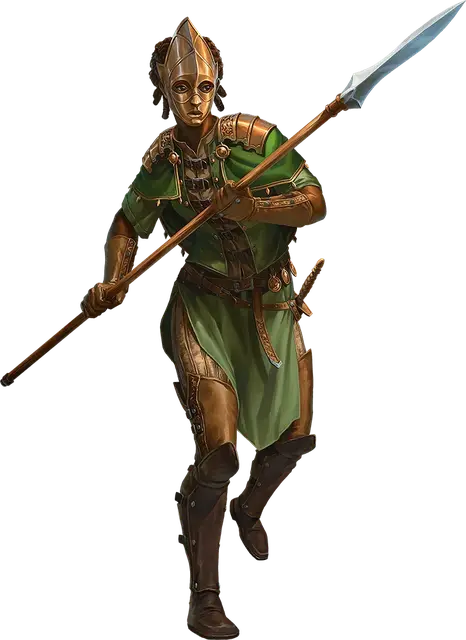

Воитель Мадаруа
Warrior of Madarua
Средний Гуманоид, хаотично-добрый

Класс Доспеха 12 (кожаный доспех)
Хиты 11 (2к8 + 2)
Скорость 30 футов
| мод | спас | ||
|---|---|---|---|
| СИЛ | 15 | +2 | +2 |
| ЛОВ | 12 | +1 | +1 |
| ТЕЛ | 13 | +1 | +1 |
| мод | спас | ||
|---|---|---|---|
| ИНТ | 10 | +0 | +0 |
| МДР | 10 | +0 | +0 |
| ХАР | 10 | +0 | +0 |
Навыки Акробатика +3, Религия +2
Чувства пассивное Восприятие 10
Языки Общий
Опасность 1/8 (25 опыта)
Бонус мастерства +2
Действия
Копье. . Дальнобойная или рукопашная атака оружием: +4 к попаданию, досягаемость 5 фт. или дистанция 20/60 фт. Попадание: 5 (1к6 + 2) колющего урона, или 6 (1к8 + 2) колющего урона, если используется двумя руками для совершения рукопашной атаки.
Реакции
Парирование. Воитель добавляет +2 к КД против одной рукопашной атаки, которая должна попасть по нему. Для этого он должен видеть атакующего и должен использовать рукопашное оружие.
Описание
Участники Воителей Мадаруа носят бронзовые маски, изображающие лик Мадаруа, древней кинидской богини плодородия, смерти и времен года. У каждого из них есть небольшая татуировка в виде серпа на внутренней стороне левого запястья.
Воители Мадаруа признают и уважают вечно меняющиеся жизненные трудности. В бою они стремятся быть свирепыми и непредсказуемыми, подобно самой природе.
Воитель Мадаруа
Воители являются пехотой фракции. Они благодарят Мадаруа за каждую пережитую ими битву и ежедневно тренируются с копьями, чтобы следовать за ней к победе.